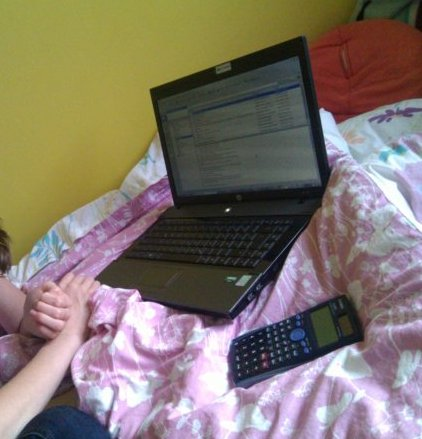
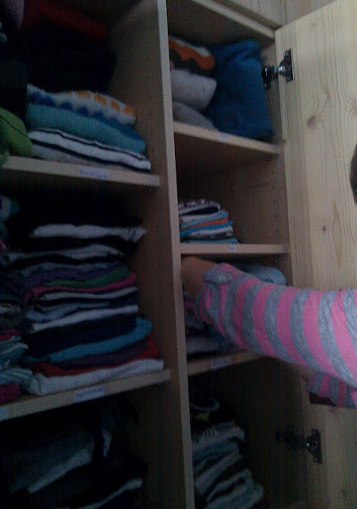
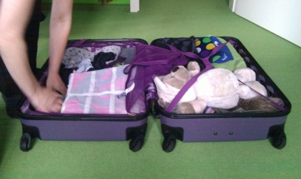

Need Finding
Which of the design briefs does your observation fall under: Change, Glance, or Time? Explain what activity you observed and how it relates to the brief.
I chose "glance" and decided to observe three people while they were preparing travel. In this situation getting an overview, processing information from various sources and structure it accordingly are particularly important. Having all the information available "at a glance" is an essential driver for the actions related to preparing travel like packing bags, deciding on what to take with you or what you need to do before you can leave.
Describe how three people performed an activity related to the brief you chose. In particular, you should focus on a particularly interesting moment/breakdown/workaround from the observation. You can describe your observations using simple text, or you can be creative and describe using sketches, storyboards, or any other format. For extra credit, upload a photograph of each person performing the described activity, with a short caption.
First I observed A. while she was packing for a trip with some friends. She used an index card with a list of items she needed to pack as an overview. The content of the card was copied from another card she used for some previous travel. She used a pencil to check off the items she had packed. This required her to walk forth and back between the card, her bag, and the places where the things were she packed. She complained about that, especially as she had to walk to a room on a different floor several times, because the items she needed from there were not grouped together on her card.
She did some calculations how many pieces of clothes she needed based on the duration of her stay. She also commented that it was difficult to prepare for the trip because she needed to make sure that she didn't use the clothes she wanted to take with her just before the trip, because otherwise they would have been dirty. A related problem was to find the clothes she wanted to take as she didn't have a good overview of what exactly was where.
Another recurring comment was that she needed to check, if everything fitted into her bag. Some things she tried like if the big book she was reading fit, and then she decided to not take it. She didn't have an overview of all what she needed in terms of size and how it fitted into the bag, which led to some try and error and revising decisions.
A particular interesting moment was when she calculated how much money she needed to take with her for the trip. She had some information about several costs in emails and added this up. But she didn't use her computer to do that, but a physical calculator. As reason she said that the calculator in the computer is too hard to find, and that she liked her "Casio". The emotional binding to her calculator made her to prefer to use it, even if it was some extra work of having to type in again the numbers, which would have already been in the computer. See attached photo for this situation.
Second I observed T. She was packing for a vacation trip to a horse ranch with her mother S.. She moved her clothes from her closet to her bag easily without a lot of searching, because she had a specific system how to store her clothes, including labels in the closet. This gave her an immediate overview of all her available clothes at a glance.
She didn't use a check list, but let her mother remind her what she needed. She also did the same type of calculations what she needed as A.. One complication for her was that she sometimes needed to check, if the clothes were still fitting her or if she had outgrown them. For some she didn't really know, as she didn't remember when she had worn them for the last time.
One specific topic of overview came up when she packed what she needed for the horse riding she intended to do during her vacation. That triggered a whole set of things. She remembered what it was from a previous horse riding activity, but about some things she wasn't sure, so she tried to find answers by asking what her friend would have packed. She also said that she tried to picture herself in her fantasy riding a horse, so she could have associations from her memories and this picture tell her what she needed. In the interview she said that she uses that as a general technique, imaging the concrete situation of being on vacation at a particular place doing specific things to trigger all the associations and memories about what she needed to take with her.
A similar thing happened when she packed what she needed for going swimming. There it was more automatic, though, as she does that more often, so she doesn't need to think so much about what she needs. Just the idea of swimming already triggered the list of things she needed.
The photo shows how she packs things from her closet, where different sections are labeled to get an overview about what is where.
Finally I observed S., the mother of T. while packing her stuff. She used a similar procedure as T. and let T. remind her of the things she needed. This made her quite effective as she didn't need to look up what she needed from a list or something like that.
One thing which occured several times was that she asked how much of something she needed and T. answered with how much she had packed. The comparison served her as reference to get an overview of what she needed. She also used counting the number of days of the trip as a way to determine how many pieces of clothes she needed.
S. postponed a number of items because she still needed them, like the charger for her phone or her tooth brush. This required her to remember it later.
In the interview she commented that packing for different occasions at the same time, such as a trip where you need clothes for hiking as well as for going out in the evening, puts her under mental stress as she has to think of more and remind what she already has and what she needs.
A number of decisions were also taken based on the consideration that they went by car and so had more room compared to going by train for example. This changed the perspective of how to get the overview of the things being packed and what limitations were there.
As S. and T. were using one bag together to pack their clothes, the question came up how to maintain easy access to their clothes and see at a glance what they already had packed and then later on their trip where to find the things they needed. The solution was to assign separate compartments of the bag to each of them. The photo shows how this was set up.
Write a list of needs/goals/tasks inspired by what you observed (at least 15). If you brainstormed with others, please include their names in your submission.
- Having a list of what needs to be packed.
- The list needs to be checkable to identify what already has been packed.
- The list works better, if it's mobile or talks, so using it doesn't need physical attention.
- There are some easy algorithms for getting an overview what needs to be packed, like counting travel days.
- Location-based reminders of what to take, e.g. based on the room where you are, increase efficiency.
- Emotional attachment to the tools (e.g. A.'s calculator) makes a significant difference in if the tool is used or not.
- Some requirements come in sets (e.g. what you need for horse riding) These sets might be useful to share with friends.
- Comparing lists or sets with the ones from previous trips also provides valuable information.
- Having a size estimation of needed items would make selecting bags and what to put there more easy.
- Breaking down size constraints on which items fit the luggage
- Reflect context and means of travel to select what is needed.
- Easily identifying where items are helps.
- Information about prices (e.g. accommodation and travel) needs to be accessible and processable.
- Visualizing activities and details of the trip is needed to get a better overview and confidence about having everything remembered.
- There needs to be some confidence about not forgetting anything.
- There needs to be a reminder for packing items which are still needed at a later point in time.
- Clothes need to be identified according to different criteria (robust, elegant, can become dirty, still fits,...)
- Identifying items according to whom they belong.
List five existing designs (inspirations) that relate to your thinking. The relationship could be very concrete or very abstract. For each design, give brief explanations (1-2 sentences) for why you chose those designs.
- Wunderlist (www.wunderlist.com).
- This is an easy and enjoyable way to manage todo lists and checking of items. It's particularly insipring because it tries to create some emotional connection to the tool by beautiful and adaptable visual design and very smooth and simple interaction.
- Digital luggage scale (http://www.balanzza.com/).
- This gives information about the weight of the luggage at a glance. It's interesting because it takes into account a measurement (weight) which usually isn't associated with computer programs or devices.
- Flickr (e.g. http://www.flickr.com/photos/izuyan/sets/72157626606763266/with/5668659161/).
- This can be an awesome tool to trigger visual imagination and live through a trip in advance while preparing it.
- Dopplr (http://www.dopplr.com/).
- This site allows people to share their trip details with their friends. This can be used to get trusted recommendations of what to do during the trip, where to stay, and other information from a social context. It gives a nice glance of where you and the people around you travel.
- Smart Mirror (http://www.zdnet.com/blog/emergingtech/rfid-tags-help-you-to-choose-clothes/719).
- This project provides suggestions when buying clothes based on the ones you are trying on using RFID tags. This is a great inspiration what you can do with very local location- and context-based systems.